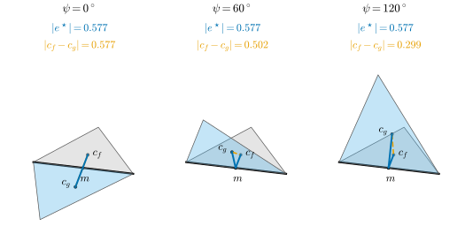
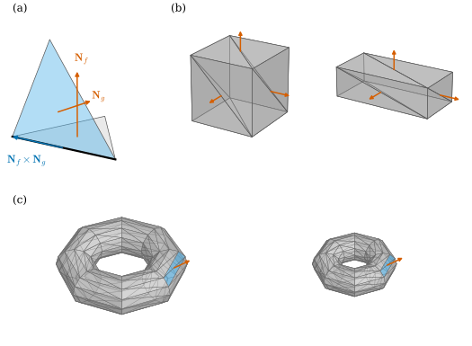
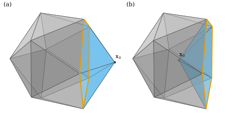

38.6 DEC on Curved Surfaces and Shape Recovery
Goals
- Chapter 36의 diagonal Hodge star와 cotan Laplacian이 휘어진 mesh에서도 그대로 정의되고, edge length만의 함수(intrinsic)임을 증명할 수 있다.
- discrete Laplace–Beltrami operator \(\star_0^{-1}L\)을 정의하고, edge length를 바꾸지 않는 변형에서 그것이 변하지 않음을 hinge와 icosphere로 확인할 수 있다.
- face normal만으로 mesh가 scale과 translation을 빼고 정해지는 조건을 증명하고 구현할 수 있으며, 그것이 smooth surface와 어떻게 다른지 설명할 수 있다.
- edge length(metric)로 모양이 정해지는 경우(Cauchy–Alexandrov, Cohn-Vossen)와 정해지지 않는 예를 구별할 수 있다.
Prerequisites
- Section 36.5: circumcentric dual Definition 36.5.6, Lemma 36.5.9, cotan formula Theorem 36.5.10, Corollary 36.5.11, diagonal Hodge star Definition 36.5.14.
- Section 36.6: cotan Laplacian Definition 36.6.6, Proposition 36.6.7, Proposition 36.6.11.
- Section 38.2–38.5: induced metric Definition 38.2.1, Gauss map Definition 38.3.1, discrete immersion Definition 38.4.7, discrete Gauss map Definition 38.5.1.
Motivation
Section 38.5는 mesh의 extrinsic한 양, 곧 normal을 다루었다. 이 절은 intrinsic한 양으로 돌아간다. Section 38.3에서 본 대로 곡면 위의 Hodge star는 parameter 평면에서 induced metric \(\mathsf{g}\)로 \(90^\circ\) 돌리는 연산이고(Proposition 38.3.6), 그 정의에는 \(\mathsf{g}\)만 들어간다. 반면 \(d\)는 좌표 미분일 뿐 길이를 재지 않는다. Chapter 36은 평면 mesh에서 diagonal Hodge star와 cotan Laplacian을 만들었는데, 그 공식에 들어간 것은 각 triangle 안의 길이와 각뿐이었다. 휘어진 mesh에서도 triangle 하나하나는 평면 triangle이다. 그렇다면 Chapter 36의 공식을 고치지 않고 써도 되는가? Proposition 38.6.1이 그렇다고 답하고, 그 이유가 edge length에 있음을 보인다.
두 번째 질문은 반대 방향이다. 미분으로 얻은 양에서 mesh를 되살릴 수 있는가? 곡선은 discrete curvature에서 되살아났다(Theorem 37.4.6, Theorem 37.5.8). 곡면에서는 discrete Gauss map(Section 38.5)만 주었을 때, 그리고 edge length만 주었을 때 무엇이 되살아나는지 본다. 3D vision의 말로 하면 앞의 것은 normal map에서 mesh를 복원하는 문제이고, 뒤의 것은 edge 길이 제약만으로 모양이 정해지는지의 문제다.
Hodge Stars on a Curved Mesh
discrete immersion \(\mathbf{x}\)의 triangle마다 Definition 36.5.6을 그대로 쓴다. circumcenter \(c_f\)와 edge 중점 \(m_e\)는 triangle \(f\)의 평면 안의 점이고, \(h_{f,e}\)도 그 평면 안에서 잰다. 달라지는 것은 dual edge \(e^\star = [c_g, m_e] + [m_e, c_f]\)가 더 이상 직선이 아니라 공유 edge \(e\)에서 꺾인다는 것뿐이다. 두 조각은 각자의 triangle 안에서 \(e\)에 수직이다(Lemma 36.5.9(a)). 그래서 \(g\)를 \(e\)를 축으로 돌려 \(f\)의 평면에 펼치면 두 조각은 \(m_e\)에서 \(e\)에 수직인 한 직선 위에 놓인다. 펼친 그림은 Chapter 36의 평면 상황이고, \(\abs{e^\star} = h_{f,e} + h_{g,e}\)는 펼쳐도 변하지 않는다. 곡면 위에서 primal과 dual이 “수직”이라는 것은 이렇게 펼쳤을 때 수직이라는 뜻이다 [Cr §4.8.4].
Proposition 38.6.1 (Hodge stars from edge lengths). (a) 세 변의 길이가 \(a, b, c\)이고 \(a\)의 맞은편 각이 \(\alpha\)인 triangle의 넓이 \(A\)(Heron 공식)와 \(\cot\alpha\)는
이다. (b) 따라서 simplicial surface 위의 discrete immersion에서 diagonal Hodge star \(\star_0\), \(\star_1\), \(\star_2\)(Definition 36.5.14. \(\star_0\)은 circumcentric이든, 같은 꼴로 barycentric cell(Remark 36.5.17(a))이나 mixed Voronoi cell(Section 38.5)의 넓이를 쓴 것이든)와 cotan Laplacian \(L\)(Definition 36.6.6)은 edge length \(\ell_{ij} = \abs{\mathbf{x}_j - \mathbf{x}_i}\)만의 함수다.
Proof. (a) 코사인 법칙 \(a^2 = b^2 + c^2 - 2bc\cos\alpha\)와 \(2A = bc\sin\alpha\)에서 \(\cot\alpha = \dfrac{b^2 + c^2 - a^2}{2bc}\cdot\dfrac{bc}{2A} = \dfrac{b^2 + c^2 - a^2}{4A}\)이다. 또
\[ \begin{aligned} 16A^2 &= 4b^2c^2\sin^2\alpha = (2bc)^2 - (b^2 + c^2 - a^2)^2 \\ &= \big(a^2 - (b - c)^2\big)\big((b + c)^2 - a^2\big) \end{aligned} \]
이고 두 인수를 다시 인수분해하면 (38.6.1)의 첫 식(Heron 공식)이다. (b) \(\star_2 = 1/A_f\)이다. \(\star_1 = \abs{e^\star}/\abs{e} = \tfrac12(\cot\alpha_e + \cot\beta_e)\)는 Theorem 36.5.10인데, 그 증명은 각 triangle 안에서 Lemma 36.5.9의 \(h_{f,e} = \tfrac{\abs{e}}{2}\cot\theta\)를 쓴 것뿐이므로 휘어진 mesh에서도 성립한다. circumcentric \(\star_0\)는 Corollary 36.5.11의 \(\tfrac18\sum(\ell_{ij}^2\cot\theta_k + \ell_{ik}^2\cot\theta_j)\), barycentric \(\star_0\)는 \(\tfrac13\sum_{f\ni i}A_f\)이다. mixed \(\star_0\)는 obtuse 여부(\(\cot\alpha \lt 0\), 곧 \(b^2 + c^2 \lt a^2\))에 따라 두 식 중 하나를 고른다. 모두 (a)의 \(A_f\)와 \(\cot\)로 쓰이므로 edge length만의 함수다. \(L\)의 성분은 \(\tfrac12(\cot\alpha_{ij} + \cot\beta_{ij})\)와 그 합이다(Proposition 36.6.7).
Proposition은 smooth의 사실을 그대로 옮긴 것이다. 곡면 위의 \(\star\)는 \(\mathsf{g}\)만으로 정해지고, mesh 위의 \(\star\)는 edge length만으로 정해진다. edge length는 각 triangle 위의 flat metric을 정하므로 discrete한 first fundamental form이라 할 수 있다(Definition 38.2.1과 비교). 이제 Laplacian을 곡면 위에서 정의할 수 있다.
Definition 38.6.2 (discrete Laplace–Beltrami operator). simplicial surface 위의 discrete immersion에서 \(L\)을 cotan Laplacian(Definition 36.6.6), \(\star_0 = \diag(A_1, \dots, A_{n_0})\)을 모든 \(A_i \neq 0\)인 diagonal \(\star_0\)라 하자. 0-form \(u \in \R^{n_0}\)에 대하여
로 정한 \(\Delta_h\colon \R^{n_0} \to \R^{n_0}\)를 discrete Laplace–Beltrami operator(이산 라플라스-벨트라미 연산자)라 한다. 기본은 circumcentric \(\star_0\)이고, 그것이 \(0\)이나 음수가 되는 vertex가 있으면 mixed \(\star_0\)를 쓴다.
평면에서 \(\star_0^{-1}L\)이 smooth \(\Delta = \star d\star d\)의 discrete 판이었던 것처럼(Proposition 36.6.11(a)), 곡면에서는 smooth Laplace–Beltrami operator(라플라스-벨트라미 연산자)(Section 21.6)의 discrete 판이다. 이름의 “Beltrami”는 정의역이 휘었다는 표시일 뿐이고 식은 평면과 같다. \(L\)을 다시 정의하지 않았다는 것이 요점이다. 어느 \(\star_0\)를 쓰는지가 결과에 영향을 주는데, 그것은 아래 icosphere 예와 Section 42.4에서 다룬다.
Corollary 38.6.3 (same edge lengths, same operators). 같은 simplicial surface의 두 discrete immersion \(\mathbf{x}, \mathbf{y}\)가 모든 edge에서 같은 길이를 가지면 \(\star_0, \star_1, \star_2\), \(L\), \(\Delta_h\)가 같다.
Proof. Proposition 38.6.1(b)에서 바로 나온다.
smooth에서 이에 해당하는 것은 isometry(등거리사상)가 Laplace–Beltrami operator를 보존한다는 것이다(Definition 7.2.1). 종이를 접거나 말아도 종이 위에서 잰 길이는 그대로이고, 그 위의 열 방정식이나 Poisson 방정식도 그대로다.
Example 38.6.4 (a hinge). Example 38.4.3(c)의 hinge \(\mathbf{x}_0 = (0, 0, 0)\), \(\mathbf{x}_1 = (1, 0, 0)\), \(\mathbf{x}_2 = (0.5, 0.8, 0)\), \(\mathbf{x}_3 = (0.3, -0.9\cos\psi, 0.9\sin\psi)\)에서 다섯 edge의 길이는 \(\psi\)에 의존하지 않는다. 공유 edge \(01\)의 맞은편 각은 \(\mathbf{x}_2\)에서 \(\cot\theta_2 = 0.39/0.8 = 0.4875\), \(\mathbf{x}_3\)에서 \(\cot\theta_3 = 0.6/0.9 = 2/3\)이므로 \(L_{01} = \star_1 = \tfrac12(0.4875 + 0.6667) = 0.577083\)이고, 이 값과 \(L\)의 나머지 성분이 모든 \(\psi\)에서 같다. 반면 extrinsic한 양은 변한다. face \(g = (1, 0, 3)\)의 normal은 \((0, \sin\psi, \cos\psi)\)로 \(\psi\)를 따라 돌고, 두 face normal 사이의 각은 \(\psi\)다.
Verification: verify/v-38-6-dec-curved-surfaces.py
Non-example 38.6.5 (the straight distance between circumcenters). \(\star_1\)을 공간에서 잰 두 circumcenter 사이의 거리 \(\abs{c_f - c_g}\)로 정하면 intrinsic하지 않다. hinge에서 \(h_f = \tfrac12\cot\theta_2 = 0.24375\), \(h_g = \tfrac12\cot\theta_3 = \tfrac13\)이고 두 조각 사이의 각이 \(\pi - \psi\)이므로
\[ \abs{c_f - c_g}^2 = h_f^2 + h_g^2 + 2h_fh_g\cos\psi \]
이다. \(\psi = 0^\circ, 60^\circ, 120^\circ\)에서 \(\abs{c_f - c_g} = 0.5771, 0.5018, 0.2988\)로 줄어든다. 이 값은 \(\psi = 0\)(평평할 때)에서만 \(\abs{e^\star} = h_f + h_g\)와 같다. 이렇게 정한 Laplacian은 종이를 접기만 해도 바뀐다.
Verification: verify/v-38-6-dec-curved-surfaces.py
Figure 38.6.1은 두 길이를 나란히 보여 준다. 세 패널에서 회색 triangle은 고정되어 있고 하늘색 triangle이 굵은 검은 edge를 축으로 접힌다. 파란 꺾은선 \(c_g \to m \to c_f\)가 dual edge다. 접는 동안 두 조각은 각자의 triangle 안에서 검은 edge에 수직인 채로 함께 돌고, 길이의 합 \(0.577\)은 그대로다. 주황 점선은 두 circumcenter를 공간에서 곧게 이은 것인데, 접을수록 짧아진다. 패널 위의 파란 숫자가 \(\abs{e^\star}\), 주황 숫자가 \(\abs{c_f - c_g}\)이다.

Example 38.6.6 (the icosphere).
unit sphere 위에서 높이 함수 \(z\)는 \(\Delta z = -2z\)를 만족한다(Exercise 38.6.2). dgmesh.icosphere(level)에서 circumcentric \(\star_0\)의 합(곧 mesh의 넓이)과 \(\Delta_hz\)를 보자. icosphere에는 obtuse triangle이 없으므로 circumcentric과 mixed \(\star_0\)가 같고 모두 양수다.
- (a) \(\sum_iA_i\)는 level 0–4에서 \(9.5745, 11.6659, 12.3298, 12.5065, 12.5514\)이고 \(4\pi = 12.5664\)로 간다. 모자라는 양 \(2.99, 0.900, 0.237, 0.060, 0.015\)는 level마다 약 \(\tfrac14\)로 준다(edge 길이가 반이 되므로 \(O(h^2)\)).
- (b) \(\max_i\abs{(\Delta_hz)_i + 2z_i}\)는 level 0, 1에서 반올림 오차 수준(\(10^{-15}\))이고, level 2, 3, 4에서 \(0.0284, 0.0150, 0.0076\)으로 edge 길이에 비례해 준다.
- (c) barycentric \(\star_0\)를 쓰면 같은 최대 오차가 level 1–4에서 \(0.174, 0.229, 0.243, 0.247\)로 줄지 않는다. 최대 오차는 valence 5인 vertex에서 나오고, level 4에서 그 vertex의 circumcentric과 barycentric dual area의 비는 약 \(1.145\)이다.
Verification: verify/v-38-6-dec-curved-surfaces.py
(b)에서 level 0, 1이 정확한 것은 우연이 아니다. 꼭짓점이 모두 sphere 위에 있으면 \(\Delta_h\mathbf{x}\)의 반지름 방향 성분은 circumcentric \(\star_0\)로 나눌 때 언제나 정확히 \(-2\)이고(Chapter 31의 Example 31.3.6), level 0, 1의 vertex는 모두 그 vertex를 지나는 축에 대한 회전 대칭을 가져서 접선 성분이 \(0\)이다. level 2부터는 그런 대칭이 없는 vertex가 생기고 접선 성분이 오차로 남는다. (c)는 Chapter 31에서 mass matrix의 선택으로 본 현상과 같다. 여기서는 그것이 \(\star_0\)의 선택이라는 이름을 얻었다.
Shape from Normals
discrete Gauss map \(\{\mathbf{N}_f\}\)만 주어졌다고 하자. 조합 구조(어느 face가 어느 vertex를 갖는지)는 안다. vertex 위치를 되살릴 수 있을까? 출발점은 Section 38.5의 관찰이다. 이웃한 두 face의 normal은 둘 다 공유 edge에 수직이다.
Lemma 38.6.7 (edge directions from normals). discrete immersion에서 edge \(ij\)를 공유하는 두 face \(f, g\)가 \(\mathbf{N}_f \neq \mathbf{N}_g\)를 만족하면 \(\mathbf{x}_j - \mathbf{x}_i\)는 \(\mathbf{N}_f\times\mathbf{N}_g\)에 평행하다.
Proof. \(\mathbf{x}_j - \mathbf{x}_i\)는 두 face의 edge이므로 \(\mathbf{N}_f\)와 \(\mathbf{N}_g\)에 모두 수직이다. Corollary 38.4.10(c)에서 \(\mathbf{N}_g \neq -\mathbf{N}_f\)이고 가정에서 \(\mathbf{N}_g \neq \mathbf{N}_f\)이므로 두 unit vector는 일차독립이다. 둘에 수직인 vector는 \(\mathbf{N}_f\times\mathbf{N}_g\)(\(\neq 0\))의 배수뿐이다.
orientation이 있는 simplicial surface 위의 discrete immersion에서, 두 face \(f, g\)가 공유하는 interior edge 가운데 \(\mathbf{N}_f = \mathbf{N}_g\)인 것, 곧 두 face가 같은 평면에 펼쳐져 있는 edge를 flat edge(평평한 모서리)라 한다(\(\mathbf{N}_g = -\mathbf{N}_f\)는 Corollary 38.4.10(c)가 막으므로, 이것은 두 face가 한 평면에 있다는 것과 같다). flat edge가 없으면 lemma가 모든 edge의 방향을 준다. 그러면 triangle마다 세 변의 방향이 정해지고, 세 변의 방향이 정해진 triangle은 닮음꼴을 빼고 하나다. 이웃 triangle은 변을 공유하므로 크기의 비가 정해지고, triangle을 하나씩 붙여 나가면 mesh 전체가 하나의 scale과 위치를 빼고 정해진다. 아래 정리는 이 과정을 선형대수로 쓴 것이다. 미지수 \(\mathbf{y}_1, \dots, \mathbf{y}_{n_0} \in \R^3\)에 대하여, 모든 face \(f\)와 \(f\)의 모든 edge \(ab\)에서 성립해야 하는 선형 방정식
은 “\(\mathbf{y}\)의 face \(f\)가 \(\mathbf{x}\)의 face \(f\)와 평행한 평면에 있다”는 뜻이다. \(\mathbf{y} = c\mathbf{x} + \mathbf{t}\)(\(c \in \R\), \(\mathbf{t} \in \R^3\))는 언제나 해이므로, 해의 공간은 적어도 4차원이다.
Theorem 38.6.8 (shape from normals). \(\mathcal{K}\)가 connected closed oriented simplicial surface이고 \(\mathbf{x}\)가 flat edge가 없는 discrete immersion이라 하자. \(\mathbf{y}\colon \{1, \dots, n_0\} \to \R^3\)이 (38.6.3)을 만족하면 \(\mathbf{y} = c\mathbf{x} + \mathbf{t}\)인 \(c \in \R\), \(\mathbf{t} \in \R^3\)이 있다. 특히 \(\mathcal{K}\)의 discrete immersion 가운데 \(\mathbf{x}\)와 discrete Gauss map이 같은 것은 \(c \neq 0\)인 \(c\mathbf{x} + \mathbf{t}\)뿐이다.
Proof idea: 각 edge는 원래 edge의 몇 배가 된다(lemma). triangle이 닫혀 있다는 조건이 한 triangle의 세 배율을 같게 만들고, face들이 edge로 이어져 있으므로 배율이 하나뿐이다.
Proof. closed surface이므로 각 edge \(e = ab\)는 두 face \(f, g\)에 속한다. (38.6.3)에서 \(\mathbf{y}_b - \mathbf{y}_a\)는 \(\mathbf{N}_f\)와 \(\mathbf{N}_g\)에 수직이므로 Lemma 38.6.7의 증명에서처럼 \(\mathbf{y}_b - \mathbf{y}_a = \lambda_e(\mathbf{x}_b - \mathbf{x}_a)\)인 \(\lambda_e \in \R\)이 있다. face \((i, j, k)\)에서 \(u = \mathbf{x}_j - \mathbf{x}_i\), \(w = \mathbf{x}_k - \mathbf{x}_j\)라 하면 \(\mathbf{x}_i - \mathbf{x}_k = -u - w\)이고, \(\mathbf{y}\)의 세 edge의 합이 \(0\)이므로
\[ \begin{aligned} 0 &= \lambda_{ij}u + \lambda_{jk}w - \lambda_{ki}(u + w) \\ &= (\lambda_{ij} - \lambda_{ki})u + (\lambda_{jk} - \lambda_{ki})w \end{aligned} \]
이다. triangle이 퇴화하지 않으므로 \(u, w\)는 일차독립이고, \(\lambda_{ij} = \lambda_{jk} = \lambda_{ki}\)이다. 곧 \(\lambda\)는 face마다 상수이고, edge를 공유하는 두 face에서 같은 값이다. connected surface에서는 어느 두 face도 edge를 공유하는 face의 사슬로 이어지므로(Lemma 33.4.15) \(\lambda\)는 모든 edge에서 같은 값 \(c\)이다. 그러면 \(d(\mathbf{y} - c\mathbf{x}) = 0\)이고 1-skeleton이 connected이므로 \(\mathbf{y} - c\mathbf{x}\)는 상수 \(\mathbf{t}\)다(Proposition 38.4.6(d)). 마지막 문장: \(\mathbf{y}\)가 같은 face normal을 가지면 각 face가 \(\mathbf{N}_f\)에 수직인 평면에 있으므로 \(\mathbf{y}\)는 (38.6.3)을 만족하고, immersion이므로 \(c \neq 0\)이다. 거꾸로 \(c \neq 0\)이면 \((c\mathbf{u})\times(c\mathbf{w}) = c^2\,\mathbf{u}\times\mathbf{w}\)이므로 face normal이 같다.
\(c \lt 0\)도 허용된다는 점에 주의하자. \(-\mathbf{x}\)는 원점에 대한 point reflection인데, cross product가 \(c^2\)배가 되므로 face normal이 그대로다. 닫힌 볼록 다면체에서 \(-\mathbf{x}\)의 normal은 안쪽을 가리키게 된다. 둘을 구별하려면 부피의 부호를 보면 된다(Exercise 38.6.5).
Example 38.6.9 (meshes that their normals determine).
icosphere(level 1, 2), octahedron, regular tetrahedron, Non-example 38.6.15의 두 icosahedron, 그리고 torus_mesh(2, 0.8, 12, 8)의 vertex를 \(0.02\) 크기로 흔든 mesh에서 (38.6.3)의 해 공간은 정확히 4차원이다. 모두 flat edge가 없다. 해 가운데 translation과 수직인 것을 고르면 \(\mathbf{x}\)의 상수배가 반올림 오차 안에서 나온다(Implementation 상자).
Verification: verify/v-38-6-dec-curved-surfaces.py
Non-example 38.6.10 (boxes). Example 38.5.9의 triangulated cube를 축 방향으로 늘린 box \(\diag(a, b, c)\,\mathbf{x}\)(\(a, b, c \gt 0\))는 모두 같은 face normal \(\pm e_1, \pm e_2, \pm e_3\)을 갖지만 \(a : b : c\)가 다르면 닮음이 아니다. 정사각형의 대각선 여섯 개가 flat edge이고, (38.6.3)의 해 공간은 6차원이다(Exercise 38.6.4).
Verification: verify/v-38-6-dec-curved-surfaces.py
Non-example 38.6.11 (torus meshes with planar quads).
torus_mesh(R, r, n_u, n_v)는 \(u, v\) 격자의 사각형을 대각선으로 나눈 mesh다. 이 사각형은 언제나 평평한 등변사다리꼴이고 그 normal은 \(R, r\)에 의존하지 않는다(Exercise 38.6.3). 따라서 모든 대각선이 flat edge이고, \(R \gt r \gt 0\)인 모든 \((R, r)\)의 torus mesh가 같은 discrete Gauss map을 갖는다. 예를 들어 torus_mesh(2, 0.8, 12, 8)과 torus_mesh(1.2, 0.6, 12, 8)의 face normal은 \(10^{-15}\) 안에서 같지만 \(R/r\)이 달라 닮음이 아니다. 해 공간의 차원은 \(12\times 8\) 격자에서 19, \(24\times 16\) 격자에서 39로, 4보다 훨씬 크다. vertex를 조금 흔들어 사각형을 휘게 하면 4로 돌아온다(Example 38.6.9).
Verification: verify/v-38-6-dec-curved-surfaces.py
Figure 38.6.2는 세 경우를 모았다. (a)는 lemma 하나를 그린 것이다. 고정된 회색 triangle의 normal \(\mathbf{N}_f\)는 위를 향하고, 접힌 하늘색 triangle의 normal \(\mathbf{N}_g\)는 옆으로 누워 있다. 두 주홍 화살표에 모두 수직인 방향 \(\mathbf{N}_f\times\mathbf{N}_g\)(파랑)가 정확히 검은 공유 edge를 따라간다. (b)의 두 box는 모양이 다르지만 같은 자리의 주홍 화살표가 같은 방향이다. 대각선으로 나뉜 두 triangle이 같은 평면에 있어서 lemma가 그 대각선의 방향을 주지 못한다. (c)의 두 torus도 같은 자리의 사각형(하늘색)의 normal이 같은 방향인데, 하나는 가늘고 크고 하나는 굵고 작다.

torus_mesh(2, 0.8, 12, 8)과 torus_mesh(1.2, 0.6, 12, 8).
읽는 법: 주홍 화살표는 face normal(box는 보이는 면마다 하나, torus는 하늘색 사각형 \((i, j) = (1, 7)\) 하나), (a)의 파란 화살표는 \(\mathbf{N}_f\times\mathbf{N}_g\)의 방향, 굵은 검은 선은 공유 edge다.
볼 것: (a) 두 normal의 cross product가 edge 방향이다. (b), (c) 모양이 다른데 같은 자리의 normal이 같다. 두 경우 모두 같은 평면에 있는 이웃 triangle 쌍(flat edge)이 있다.
본문과의 연결: Lemma 38.6.7, Theorem 38.6.8, Non-example 38.6.10, Non-example 38.6.11.smooth surface에서는 사정이 다르다. Gauss map을 매개변수의 함수로 주어도 곡면이 닮음꼴까지도 정해지지 않는다.
Proposition 38.6.12 (parallel surfaces share the Gauss map). immersion \(\mathbf{x}\colon U \to \R^3\)의 Gauss map이 \(\mathbf{N}\)이고, \(s \in [0, t]\)인 모든 \(s\)에서 \(\mathbf{x}_s := \mathbf{x} + s\mathbf{N}\)이 immersion이라 하자. 그러면 \(\mathbf{x}_t\)의 Gauss map도 \(\mathbf{N}\)이다.
Proof. \(d\mathbf{x}_s = d\mathbf{x} + s\,d\mathbf{N}\)이고 \(\inner{\mathbf{N}}{d\mathbf{x}} = 0\), \(\inner{\mathbf{N}}{d\mathbf{N}} = 0\)(Proposition 38.3.3)이므로 \(\mathbf{N}\)은 \(\mathbf{x}_s\)의 unit normal이다. 따라서 \((\mathbf{x}_s)_u\times(\mathbf{x}_s)_v = \lambda(s)\mathbf{N}\)이고, \(\lambda\)는 \(s\)에 대해 연속이며 \(\mathbf{x}_s\)가 immersion이므로 \(0\)이 되지 않는다. \(\lambda(0) \gt 0\)이므로 \([0, t]\)에서 \(\lambda \gt 0\)이고, \(\mathbf{x}_t\)의 Gauss map \(\lambda(t)\mathbf{N}/\abs{\lambda(t)}\)는 \(\mathbf{N}\)이다.
torus of revolution \(\mathbf{x}_{R,r}\)은 Gauss map이 (38.3.2)의 \(\mathbf{N}(u, v) = -(\cos u\cos v, \cos u\sin v, \sin u)\)로 \(R, r\)에 의존하지 않는다. 실제로 \(\mathbf{N}\)이 안쪽을 향하므로 \(\mathbf{x}_{R,r} + s\mathbf{N} = \mathbf{x}_{R,r-s}\)이고(\(0 \le s \lt r\)), 이것은 proposition의 예다. \(R/r\)이 다른 torus는 닮음이 아니므로 smooth Gauss map은 매개화와 함께 주어도 모양을 정하지 못한다. Non-example 38.6.11은 이것의 discrete 판이다.
그렇다면 triangle mesh는 왜 normal만으로 정해지는가? 수를 세어 보면 짐작할 수 있다(증명은 위의 정리이고, 아래는 직관이다). 닫힌 triangle mesh에서는 \(3n_2 = 2n_1\)과 \(n_0 - n_1 + n_2 = \chi\)에서 \(n_2 = 2(n_0 - \chi)\)이다. face normal은 \(2n_2 = 4n_0 - 4\chi\)개의 수이고, translation과 scale을 뺀 vertex 위치는 \(3n_0 - 4\)개의 수다. 데이터가 미지수보다 많다. 그래서 아무 unit vector나 face에 적으면 일반적으로 어떤 mesh의 Gauss map도 아니고, 실제 Gauss map이면 mesh가 거의 고정된다. smooth에서는 \(\mathbf{N}\)이 함수 2개, \(\mathbf{x}\)가 함수 3개라 반대로 데이터가 모자라다. 평평한 사각형 mesh도 사각형 하나에 normal 하나라 사각형 수 \(\approx n_0\)개의 normal, 곧 약 \(2n_0\)개의 수뿐이어서 smooth처럼 모자라다. triangle은 세 변의 방향이 모양을 정하지만, 사각형은 네 변의 방향을 알아도 변의 길이를 바꿀 여유가 남는다.
Recovery from the Metric
이번에는 edge length만 주어졌다고 하자. Corollary 38.6.3에 의해 \(\star\)와 \(L\)도 함께 정해진다. 이것으로 모양이 정해지는가? hinge(Example 38.6.4)는 아니라고 답한다. 길이를 지킨 채 연속적으로 접을 수 있다. smooth에서도 평면과 cylinder는 국소적으로 같은 metric을 갖는다(Exercise 38.2.1). 그러나 닫힌 볼록한 곡면에서는 답이 달라진다. 두 정리는 진술만 하고 증명하지 않는다.
Theorem 38.6.13 (Cohn-Vossen). Gaussian curvature(가우스 곡률)(Definition 8.4.1)가 \(K \gt 0\)인 compact connected regular surface를 ovaloid라 한다. 두 ovaloid 사이에 isometry가 있으면 하나는 다른 하나를 \(\R^3\)의 orthogonal transformation(반사를 포함한다)과 translation으로 옮긴 것이다 [dC §5-2, Remark 3].
Theorem 38.6.14 (Cauchy, Alexandrov). 같은 simplicial sphere의 두 discrete immersion \(\mathbf{x}, \mathbf{y}\)가 둘 다 convex polyhedron의 boundary를 이루는 embedding이고 모든 edge에서 길이가 같으면, \(\mathbf{y} = Q\mathbf{x} + \mathbf{t}\)인 \(Q \in \mathrm{O}(3)\), \(\mathbf{t} \in \R^3\)이 있다 [Alexandrov05].
Cauchy(1813)는 면이 합동이고 같은 방식으로 붙은 두 convex polyhedron이 합동임을 보였고, Alexandrov는 이것을 “convex polyhedron은 그 표면의 intrinsic metric으로 정해진다”로 넓혔다. triangle의 edge length는 그 metric을 정하므로 위의 꼴이 된다. 이 정리에서 면 사이의 각(dihedral angle)은 주어지지 않았다는 점이 중요하다. 길이만 주어도 볼록성이 각을 정해 버린다. 볼록성은 \(\mathbf{x}\)와 \(\mathbf{y}\) 모두에 필요하다.
Non-example 38.6.15 (a dimpled icosahedron).
unit sphere에 내접한 regular icosahedron(dgmesh.icosahedron)에서 vertex \(\mathbf{x}_0\)의 이웃 다섯은 \(\mathbf{x}_0\) 방향으로 높이 \(1/\sqrt5\)인 한 평면 위에 있다. \(\mathbf{x}_0\)만 이 평면에 대해 반사한 \(\mathbf{y}\)(ddg38.dimpled_icosahedron)를 만들자. 반사는 그 평면 위의 점까지의 거리를 보존하므로 \(\mathbf{x}_0\)에서 나가는 다섯 edge의 길이가 그대로이고, 나머지 edge는 움직이지 않는다. 따라서 30개의 edge length가 모두 같고(\(1.0515\)), Corollary 38.6.3에 의해 \(\star\)와 \(L\)도 같다. 그러나 \(\mathbf{y}\)는 움푹 들어간 nonconvex polyhedron이고 \(\mathbf{x}\)와 합동이 아니다. 둘러싼 부피가 \(2.5362\)에서 \(1.8352\)로 줄고, \(\mathbf{x}_0\)의 다섯 face의 normal이 각각 \(74.75^\circ\) 돈다.
Verification: verify/v-38-6-dec-curved-surfaces.py
Figure 38.6.3은 \(\mathbf{x}_0\)가 옆에 오도록 두 다면체를 같은 방향에서 본 것이다. 하늘색은 \(\mathbf{x}_0\)의 다섯 face, 주황 오각형은 그 link다. (a)에서는 \(\mathbf{x}_0\)가 오른쪽으로 뾰족하게 나와 있고, (b)에서는 같은 다섯 face가 주황 오각형 안쪽으로 접혀 들어가 \(\mathbf{x}_0\)가 다면체 안에 있다. 오각형과 나머지 열다섯 face는 두 그림에서 똑같다. edge 길이를 모두 재어도 두 모양을 구별할 수 없다. 반면 face normal은 다섯 개가 달라서 normal로는 바로 구별된다. 두 mesh 모두 flat edge가 없으므로 Theorem 38.6.8에 의해 각자의 normal이 각자의 모양을 scale과 translation을 빼고 정한다.

smooth에도 같은 현상이 있다. sphere의 한 cap을 그 경계 원의 평면에 대해 뒤집어 넣으면 길이는 그대로인데 모양이 다르다(경계 원에서 매끄럽지 않으므로 Cohn-Vossen의 정리와 모순은 아니다). 볼록하지 않은 경우에 edge length를 주고 그것을 (근사적으로) 실현하는 immersion을 찾는 문제를 shape from metric이라 한다. Chern, Knöppel, Pinkall, Schröder [Chern18]는 이 문제의 algorithm을 제시하는데, 해가 유일하다는 보장은 위의 예처럼 없다. 이 논문은 이 장의 discrete immersion을 더 깊이 다루는 읽을거리이기도 하다. edge length에 이웃 face 사이의 각을 더하면 모양이 rigid motion을 빼고 정해진다는 것이 Section 39.5의 discrete fundamental theorem이다.
Summary
- 휘어진 mesh에서도 triangle은 평평하므로 Chapter 36의 diagonal Hodge star와 cotan Laplacian을 그대로 쓴다. dual edge는 공유 edge에서 꺾이고, 펼쳐서 잰다. \(\cot\alpha = (b^2 + c^2 - a^2)/(4A)\)와 Heron 공식 때문에 모두 edge length만의 함수다(Proposition 38.6.1).
- discrete Laplace–Beltrami operator는 \(\Delta_h = \star_0^{-1}L\)이다(Definition 38.6.2). edge length를 지키는 변형에서 변하지 않고(Corollary 38.6.3), icosphere에서 \(\Delta_hz \to -2z\)이지만 \(\star_0\)의 선택에 따라 점마다의 수렴이 달라진다(Example 38.6.6).
- flat edge가 없는 닫힌 triangle mesh는 face normal로 scale과 translation을 빼고 정해진다(Theorem 38.6.8). flat edge가 있는 box와 평평한 사각형 torus mesh, 그리고 smooth surface(parallel surface)는 그렇지 않다.
- edge length로는 볼록한 경우에만 합동을 빼고 정해진다(Cauchy–Alexandrov, Cohn-Vossen). dimpled icosahedron은 길이가 같은 두 모양이다(Non-example 38.6.15).
Chapter 39에서는 Gauss map의 differential \(d\mathbf{N}\)으로 surface가 방향마다 얼마나 굽는지(Weingarten map, principal curvature)를 재고, edge length에 무엇을 더해야 mesh가 정해지는지(Section 39.5)에 답한다.
Exercises
Exercise 38.6.1 ★ (38.6.1)로 (a) 세 변이 \(3, 4, 5\)인 triangle의 넓이와 세 각의 cot을, (b) 한 변이 \(\ell\)인 정삼각형의 넓이와 cot을 구하여라. (c) 정사각형을 대각선으로 나눈 두 triangle에서 대각선 edge의 \(\star_1\)은 얼마인가?
Solution
(a) \(A = \tfrac14\sqrt{12\cdot 6\cdot 4\cdot 2} = \tfrac14\sqrt{576} = 6\)이다. 변 \(5\)의 맞은편: \((9 + 16 - 25)/24 = 0\)(직각). 변 \(3\)의 맞은편: \((16 + 25 - 9)/24 = 4/3\), 변 \(4\)의 맞은편: \((9 + 25 - 16)/24 = 3/4\)이다. 실제로 그 각의 \(\tan\)은 \(3/4\), \(4/3\)이다. (b) \(A = \tfrac14\sqrt{3\ell\cdot\ell\cdot\ell\cdot\ell} = \tfrac{\sqrt3}{4}\ell^2\), \(\cot = \ell^2/(\sqrt3\ell^2) = 1/\sqrt3\)이다. (c) 대각선의 맞은편 각은 두 triangle에서 모두 직각이므로 \(\star_1 = \tfrac12(0 + 0) = 0\)이다. dual edge의 길이가 \(0\)인 것은 두 triangle의 circumcenter가 모두 대각선의 중점이기 때문이다. 정사각형이 cube의 면처럼 공간에 있어도 같다(Proposition 38.6.1).
Exercise 38.6.2 ★ Laplacian의 좌표 공식(Section 21.6에서 유도한다) \(\Delta f = \frac{1}{\sqrt{\det\mathsf{g}}}\sum_{a,b}\partial_a\big(\sqrt{\det\mathsf{g}}\,\mathsf{g}^{ab}\,\partial_bf\big)\)과 unit sphere의 \((\theta, \varphi)\) 좌표 \(\mathsf{g} = \diag(1, \sin^2\theta)\)(Example 38.2.3)로 \(z = \cos\theta\)가 \(\Delta z = -2z\)를 만족함을 보여라.
Solution
\(\sqrt{\det\mathsf{g}} = \sin\theta\)(\(0 \lt \theta \lt \pi\)), \(\mathsf{g}^{-1} = \diag(1, 1/\sin^2\theta)\)이므로 \(\Delta f = \frac{1}{\sin\theta}\partial_\theta(\sin\theta\,\partial_\theta f) + \frac{1}{\sin^2\theta}\partial_\varphi^2f\)이다. \(f = \cos\theta\)는 \(\varphi\)에 의존하지 않고 \(\partial_\theta f = -\sin\theta\)이므로 \(\Delta f = \frac{1}{\sin\theta}\partial_\theta(-\sin^2\theta) = \frac{-2\sin\theta\cos\theta}{\sin\theta} = -2\cos\theta\)이다. 극점에서는 연속성으로 같은 식이 성립한다. 같은 계산으로 \(x, y\)도 \(\Delta x = -2x\), \(\Delta y = -2y\)를 만족하고, 이것이 Example 38.6.6의 기준값이다.
Exercise 38.6.3 ★★ torus of revolution \(\mathbf{x}(u, v) = ((R + r\cos u)\cos v, (R + r\cos u)\sin v, r\sin u)\)의 격자점 \(\mathbf{x}(u_i, v_j)\), \(\mathbf{x}(u_i, v_{j+1})\), \(\mathbf{x}(u_{i+1}, v_j)\), \(\mathbf{x}(u_{i+1}, v_{j+1})\)이 한 평면 위의 등변사다리꼴임을 보이고, 그 평면의 normal이 \(R, r\)에 의존하지 않음을 보여라.
Solution
\(\bar v = (v_j + v_{j+1})/2\), \(\delta = (v_{j+1} - v_j)/2\), \(\mathbf{e}_r = (\cos\bar v, \sin\bar v, 0)\), \(\mathbf{e}_\perp = (-\sin\bar v, \cos\bar v, 0)\)라 하자. \(\rho(u) = R + r\cos u\)로 쓰면 \(\mathbf{x}(u, v_j) = \rho(u)(\cos\delta\,\mathbf{e}_r - \sin\delta\,\mathbf{e}_\perp) + r\sin u\,e_3\)이고 \(\mathbf{x}(u, v_{j+1})\)은 \(\mathbf{e}_\perp\) 항의 부호만 다르다. 따라서 높이 \(u_i\)와 \(u_{i+1}\)의 두 변은 모두 \(\mathbf{e}_\perp\) 방향이라 평행하고(길이 \(2\rho(u_i)\sin\delta\), \(2\rho(u_{i+1})\sin\delta\)), 네 점은 한 평면 위의 사다리꼴이다. 평면 \(\mathrm{span}\{\mathbf{e}_r, e_3\}\)에 대한 반사가 두 변을 각각 뒤집으므로 등변이다. 평면은 \(\mathbf{e}_\perp\)와 두 변의 중점을 잇는 vector
\[ \begin{aligned} &(\rho(u_{i+1}) - \rho(u_i))\cos\delta\,\mathbf{e}_r + r(\sin u_{i+1} - \sin u_i)\,e_3 \\ &= r\big[(\cos u_{i+1} - \cos u_i)\cos\delta\,\mathbf{e}_r + (\sin u_{i+1} - \sin u_i)\,e_3\big] \end{aligned} \]
로 펼쳐진다. 괄호 안은 \(R, r\)에 의존하지 않고 \(r \gt 0\)은 방향을 바꾸지 않으므로 normal(두 vector의 cross product의 방향)도 \(R, r\)에 의존하지 않는다. 사각형을 나눈 두 triangle은 이 평면에 있으므로 같은 normal을 갖고, 대각선은 flat edge다.
Exercise 38.6.4 ★★ \(\mathbf{x}\)가 Example 38.5.9의 triangulated cube \([-1, 1]^3\)(대각선은 아무렇게나)라 하자. (a) (38.6.3)의 해가 \(\mathbf{y}_i = (\alpha_{s_1}, \beta_{s_2}, \gamma_{s_3})\)(\(s = (s_1, s_2, s_3)\)는 \(\mathbf{x}_i\)의 부호, \(\alpha_\pm, \beta_\pm, \gamma_\pm \in \R\)) 꼴뿐이고 해 공간이 6차원임을 보여라. (b) 그 가운데 \(\mathbf{x}\)와 face normal이 같은 discrete immersion은 \(\alpha_+ - \alpha_-\), \(\beta_+ - \beta_-\), \(\gamma_+ - \gamma_-\)가 모두 양수이거나 모두 음수인 것임을 보여라.
Solution
(a) 정사각형 \(x = 1\)의 두 triangle은 normal이 \(e_1\)이므로 그 edge에서 \(\mathbf{y}\)의 첫 성분이 같다. 두 triangle의 edge가 정사각형의 네 꼭짓점을 모두 이으므로 네 꼭짓점의 첫 성분이 한 값 \(\alpha_+\)이다. 같은 방법으로 \(x = -1\)에서 \(\alpha_-\), \(y = \pm1\)에서 \(\beta_\pm\), \(z = \pm1\)에서 \(\gamma_\pm\)가 정해진다. 각 vertex는 세 축마다 정확히 한 정사각형에 속하므로 \(\mathbf{y}_i = (\alpha_{s_1}, \beta_{s_2}, \gamma_{s_3})\)이다. 거꾸로 이런 \(\mathbf{y}\)는 모든 방정식을 만족한다(정사각형 \(x = \pm1\)의 방정식은 첫 성분만 보고, 그것이 정사각형 위에서 상수다). 여섯 수는 자유로우므로 6차원이다. (b) \(d_1 = (\alpha_+ - \alpha_-)/2\) 등으로 \(D = \diag(d_1, d_2, d_3)\)라 하면 \(\mathbf{y} = D\mathbf{x} + \mathbf{t}\)이다. 성분으로 계산하면 \((D\mathbf{a})\times(D\mathbf{b}) = (d_2d_3(\mathbf{a}\times\mathbf{b})_1, d_1d_3(\mathbf{a}\times\mathbf{b})_2, d_1d_2(\mathbf{a}\times\mathbf{b})_3)\)이다. normal이 \(\pm e_1\)인 face의 normal이 그대로이려면 \(d_2d_3 \gt 0\)이어야 하고, 마찬가지로 \(d_1d_3 \gt 0\), \(d_1d_2 \gt 0\)이다. 이것은 세 \(d_k\)의 부호가 같다는 것과 같다. 모두 양수이면 축에 평행한 box, 모두 음수이면 그 point reflection이다. 해 공간이 Theorem 38.6.8의 4차원보다 두 차원 크다.
Exercise 38.6.5 ★★ 닫힌 consistently oriented mesh의 signed volume을 \(\mathrm{Vol}(\mathbf{x}) := \tfrac16\sum_{f = (i,j,k)}\inner{\mathbf{x}_i}{\mathbf{x}_j\times\mathbf{x}_k}\)라 하자. (a) \(\mathrm{Vol}(\mathbf{x} + \mathbf{t}) = \mathrm{Vol}(\mathbf{x})\), \(\mathrm{Vol}(c\mathbf{x}) = c^3\mathrm{Vol}(\mathbf{x})\)임을 보여라. (b) Theorem 38.6.8의 가정에서 \(\mathrm{Vol}(\mathbf{x}) \gt 0\)이면, \(\mathbf{x}\)와 face normal이 같고 \(\mathrm{Vol} \gt 0\)인 discrete immersion은 \(c \gt 0\)인 \(c\mathbf{x} + \mathbf{t}\)뿐임을 보여라.
Solution
(a) \(\inner{\mathbf{x}_i + \mathbf{t}}{(\mathbf{x}_j + \mathbf{t})\times(\mathbf{x}_k + \mathbf{t})}\)를 펼치면 \(\mathbf{t}\)가 두 번 이상 나오는 항은 같은 vector가 triple product에 두 번 들어가 \(0\)이다. \(\mathbf{t}\)가 한 번 나오는 세 항은 triple product의 순환성으로 \(\inner{\mathbf{t}}{\mathbf{x}_j\times\mathbf{x}_k + \mathbf{x}_k\times\mathbf{x}_i + \mathbf{x}_i\times\mathbf{x}_j} = \inner{\mathbf{t}}{2A_f\mathbf{N}_f}\)이다((38.5.2)). face에 대해 더하면 Proposition 38.5.5(c)에 의해 \(0\)이다. \(c\)배는 세 인수에서 \(c^3\)이 나온다. (b) theorem에서 \(\mathbf{y} = c\mathbf{x} + \mathbf{t}\), \(c \neq 0\)이고 (a)에서 \(\mathrm{Vol}(\mathbf{y}) = c^3\mathrm{Vol}(\mathbf{x})\)이므로 \(\mathrm{Vol}(\mathbf{y}) \gt 0\)은 \(c \gt 0\)과 같다. 곧 normal과 “바깥쪽” 정보가 함께 있으면 point reflection이 배제된다.
Exercise 38.6.6 ★★ Coding. 두 Implementation 상자의 함수로 Non-example 38.6.15를 확인하여라. (a) 두 icosahedron의 edge length와 \(L\)이 같음, (b) normal이 바뀌는 face와 그 각, (c) 두 부피, (d) 두 mesh의 (38.6.3) 해 공간의 차원. 두 mesh가 길이로는 구별되지 않고 normal로는 구별되는 것이 Theorem 38.6.8, Theorem 38.6.14와 어떻게 맞는지 설명하여라.
Solution
V, W, F = ddg38.dimpled_icosahedron()
lv, lw = lengths(V, F), lengths(W, F)
print("same edge lengths:", max(abs(lv[e] - lw[e]) for e in lv) < 1e-12)
print("same L:", np.allclose(laplacian_from_lengths(F, lv, 12)[0], dm.cotan_laplacian(W, F)))
turn = np.degrees(np.arccos(np.clip(np.sum(dm.face_normals(V, F) * dm.face_normals(W, F), axis=1), -1, 1)))
print("faces whose normal turns:", np.where(turn > 1e-6)[0], "by", np.round(turn[turn > 1e-6], 2))
print(f"volume {dm.signed_volume(V, F):.4f} -> {dm.signed_volume(W, F):.4f}")
print("dim of (38.6.3):", shape_from_normals(dm.face_normals(V, F), F, 12)[0], shape_from_normals(dm.face_normals(W, F), F, 12)[0])
same edge lengths: True
same L: True
faces whose normal turns: [0 1 2 3 4] by [74.75 74.75 74.75 74.75 74.75]
volume 2.5362 -> 1.8352
dim of (38.6.3): 4 4길이와 \(L\)이 같으므로 intrinsic한 양으로는 두 mesh를 구별할 수 없다. 그러나 \(\mathbf{x}_0\)의 다섯 face가 \(74.75^\circ\)씩 돌았으므로 discrete Gauss map은 다르고, 두 mesh 모두 flat edge가 없어 해 공간이 4차원이다. Theorem 38.6.8은 각 mesh가 자기 normal로 정해진다고 말할 뿐이므로 모순이 없다. Theorem 38.6.14는 두 모양이 모두 볼록할 때만 길이가 모양을 정한다고 말하는데, dimpled icosahedron은 볼록하지 않다.